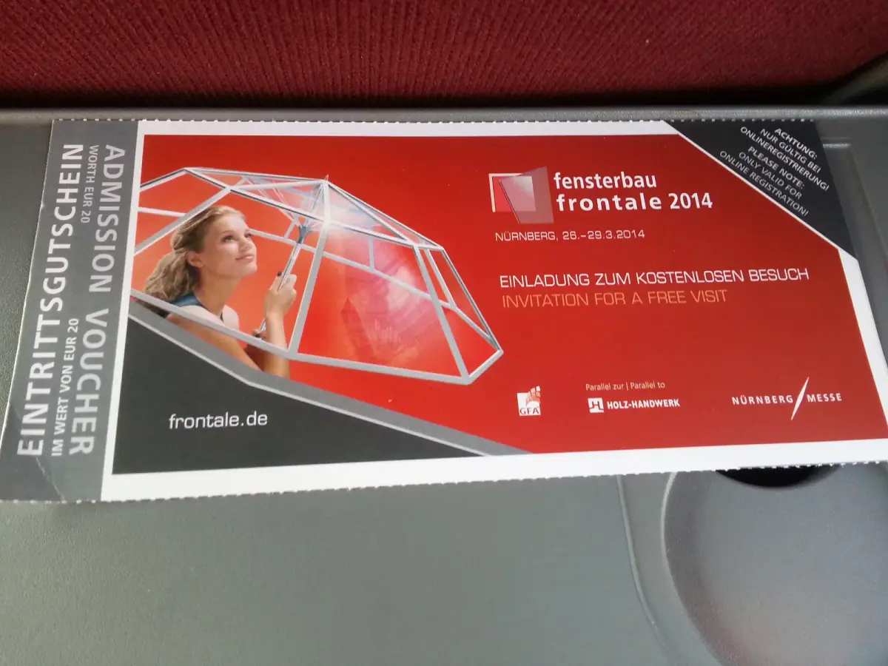
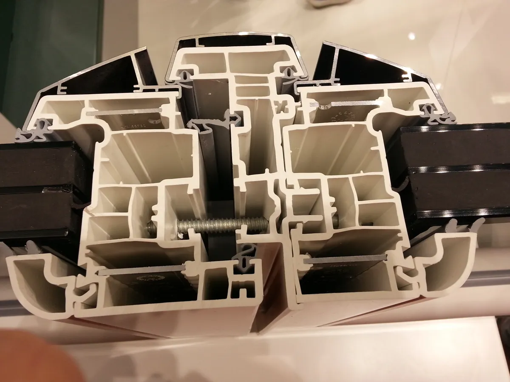
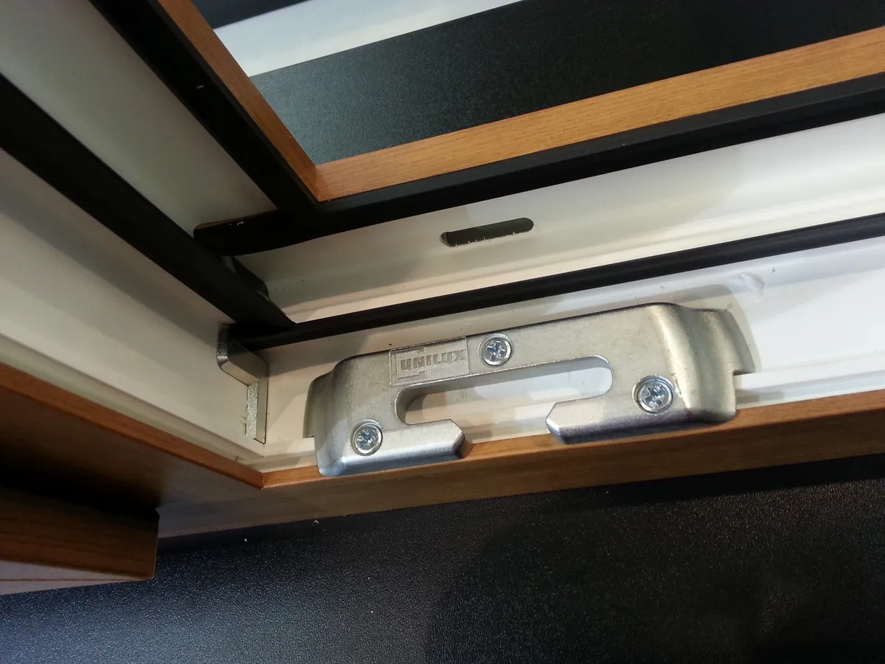
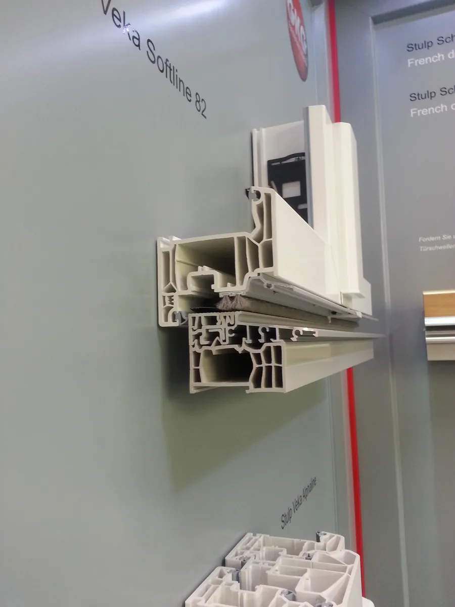
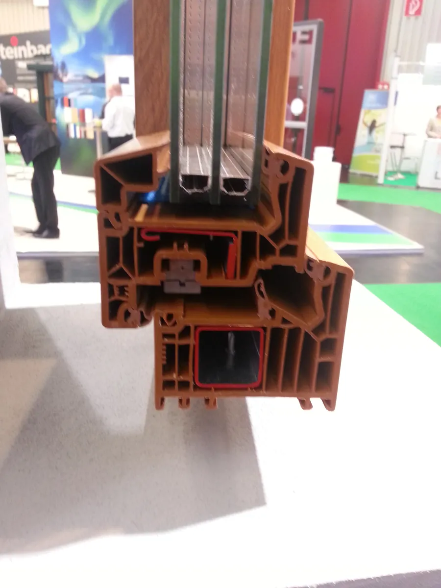

2014 德国纽伦堡 FENSTERBAU FRONTALE 考察：从德国门窗技术、标准到制造体系
FENSTERBAU FRONTALE in Nuremberg — reading Germany's window technology, standards and manufacturing system.

2014 年，我带着一批中国企业来到德国纽伦堡，参加 FENSTERBAU FRONTALE。
今天回头看，这次经历对我的意义，已经不只是"去德国看了一次展"。
那时候同行的企业来自门窗、建筑材料、家居建材、制造业和外贸等不同领域。大家去德国的原因其实很简单：德国的技术先进，而中国这个领域的很多标准和技术体系，当时都在大量参考德国和欧洲。
所以，对我们来说，德国就是一个必须去现场看的地方。
我们想看的也不只是产品。
我们想知道，一个成熟的产业到底是什么样的。
那一年，我几乎觉得德国什么都值得学
第一次进入 FENSTERBAU FRONTALE，给我的感觉是：所有东西都值得看。
门窗。幕墙。玻璃。五金。机械设备。自动化。建筑材料。
整个产业链的专业程度，让人很容易意识到一个问题：原来一个看起来普通的门窗行业，背后可以有这么深的产业体系。
当时中国企业和欧洲企业之间的差别，我的感受也非常直接。
中国企业更关注价格。欧洲企业更关注标准。德国企业特别重视产品细节。企业之间与客户交流的方式也不一样。
今天再回头看，这当然是一个非常粗略的观察，不能代表所有企业。但在 2014 年，这种差异给我的印象非常深。
如果用我当时最真实的话来总结，大概就是：
那时候看什么都是对的，什么都是好的。先学，先抄，先把别人几十年积累的东西看明白。
今天，我不会简单地把这种学习理解成复制一个产品。
但在那个阶段，中国企业确实需要一个产业坐标。而德国，就是我当时最清晰的坐标之一。


一个后发者愿意承认"自己什么都不如别人"，往往比自信地宣称"我们已经追上了"，更接近真正的进步。
——董立鑫 海鑫汇创始人兼执行总裁，新加坡世贸秘书长兼首席运营官
FENSTERBAU FRONTALE 是入口，但真正改变我的，是后来进入德国企业内部
后来，我的人生和德国企业之间的联系越来越深。我进入了 Roto，并担任 General Manager。
因此，我看德国企业，不再只是站在展馆里看展台。我开始真正进入企业内部。去总部。去生产线。去仓库。去理解一个全球化企业到底是怎么运行的。这一点对我的职业成长影响非常大。
因为展会可以让你看到一个行业"展示出来的东西"。但进入企业以后，你才会看到另外一面：
德国制造真正值得学习的，并不只是产品。
产品是怎么被设计出来的？标准是怎么进入企业体系的？生产是怎么组织的？供应链和仓储是怎么运行的？一个企业又是如何把自己的产品和体系带到全球市场？这两种观察，完全不同。
FENSTERBAU FRONTALE 让我第一次系统地看到了德国门窗产业。而后来在德国全球化企业中的工作经历，则让我开始理解：德国制造真正值得学习的，并不只是产品。


我后来真正理解"德国制造"，是在工厂和仓库里
后来，我去过 Roto 的德国总部，也进入过生产线和仓库。有些具体经历发生在哪一年，我现在已经不愿意强行放进 2014 年。但有一个画面，我一直记得。
那是一个非常高的仓库。自动化程度非常高。无人叉车。整个物流和仓储系统，给我留下了非常深的印象。
我当时最大的感受就是：原来制造企业后台可以做到这个程度。
很多年以后，我进入京东工作。再去看中国物流体系、自动化仓储和供应链的发展，我会重新想起当年在德国看到的那些场景。
后来我越来越明白，当年真正给我留下影响的，并不是"德国有一个先进仓库"。而是它让我第一次建立了一个新的产业坐标。我开始意识到：
一个企业真正的竞争力，并不只存在于客户看得到的产品上。
产品背后，还有制造。还有物流。还有仓储。还有标准。还有流程。还有组织能力。还有一套长期运行的体系。这些东西，客户未必直接看到。但它们最终会决定企业的成本、效率、质量和全球竞争力。
我的成长，也是在不断改变"我到底在看什么"
如果说 2014 年去德国时，我主要在看产品。后来，我开始看标准。再后来，我开始看制造。进入全球化企业以后，我开始看体系。
今天，当我再带中国企业去海外考察，我更关注的是：一个企业为什么能够全球化？这个问题，比"它卖什么产品"重要得多。
因为产品可以模仿。机器可以买。技术可以学习。但一个企业能不能长期建立全球竞争力，最终取决于它有没有形成自己的体系。有没有标准能力。有没有产品能力。有没有制造能力。有没有组织能力。有没有理解不同市场的能力。有没有真正走向全球的能力。
这也是我从德国开始，后来不断进入不同国家、不同企业、不同产业现场以后，逐渐形成的认识。
今天再回头看 2014 年，我仍然认为"先去看"是对的
今天的信息已经比 2014 年多得多。你可以在网上研究一家企业。可以看产品。可以看视频。可以看工厂。甚至可以用 AI 在很短时间内获得大量行业信息。
但我仍然相信，企业需要去现场。因为现场最大的价值，并不是收集信息。而是建立判断。
你站在一个展馆里，会看到整个产业链。进入一家企业，会看到它真正如何运行。走进生产线和仓库，会理解很多产品背后根本不会写在宣传册上的东西。和企业的人面对面交流，也会发现：一个市场真正的问题，往往和你坐在办公室里想象的不一样。
这也是为什么，今天我仍然持续参与和推动海外产业考察。不是因为"出国"本身有什么价值。而是因为我自己就是这样成长过来的。从展会开始。进入企业。进入工厂。进入总部。进入全球化企业的体系。然后再回到中国企业的发展和全球市场之中。
德国给我的，不只是技术，而是一套新的产业坐标
2014 年的纽伦堡，是这条路径中的一个起点。那时候，我看到的是德国门窗技术。后来，我开始理解德国标准。再后来，我看到了制造体系、自动化、仓储和全球化企业的运行方式。
今天再回头看，我最感谢那段经历的，并不是让我记住了多少德国企业，或者看到了多少产品。而是让我不断改变自己看企业的方式。以前看产品。后来开始看企业。再后来，看产业。今天，则更关注一个企业如何建立自己的全球化能力。
这也是 Gateway to New / 海鑫汇持续做海外产业考察的底层逻辑。不是简单带企业去一个国家。而是帮助企业进入新的产业现场，建立新的判断坐标。因为真正有价值的考察，最后带回来的不应该只是照片、名片和行程。而应该是一个企业对世界重新形成的理解。
2014 年，我第一次深入德国纽伦堡的 FENSTERBAU FRONTALE。那时候的我，大概不会想到，后来自己会继续进入德国总部、全球化企业体系，并不断把这种经历带回中国企业的国际交流和海外产业考察中。
但现在回头看，这条线其实一直没有断。
从德国的展馆，到德国企业的内部。从看产品，到看体系。从学习德国，到理解全球化。这也是我后来持续走向海外产业现场的起点之一。
去海外，不只是为了看到别人做得怎么样。更重要的是，重新建立自己理解世界的坐标。
本文整理自董立鑫（Bruce Dong）海外产业考察记录，首发于海鑫汇。